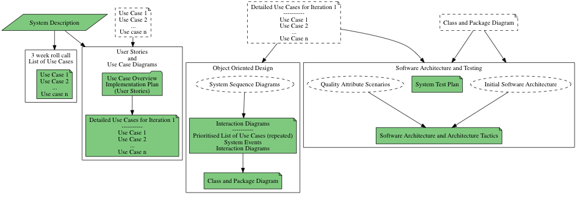

Release Sprint: Software Architecture and Testing
Table of Contents
1 About this Sprint
This is a release sprint. This means that you package things that you have done in other sprints in order to create a release (an assignment delivery). You are expected to integrate what you have learnt previously and test/evaluate your release candidate to maximise your potential for passing the assignment.
2 User Stories covered in this Sprint
- As a teacher I want to evaluate the students’ ability to “raise” a detailed design into a workable software architecture solution so that I know they fulfil the corresponding course goals.
- As a teacher I want to evaluate the students’ ability to “raise” a detailed design into a workable software architecture solution so that I know they have an understanding of software architecture solutions and how they work.
- As a teacher I want to evaluate the students’ ability to test an implemented system according to a test plan so that I know they understand how to translate a design to a test plan and how to execute this test plan.
3 Course Goals covered in this Sprint
- (PA1415, PA1443) på en grundläggande nivå i grupp kunna planera och genomföra testning av producerad programvara, baserat på en kravspecifikation.
Kunskap och Förståelse
- (PA1443) kunna visa kunskap om grundläggande mjukvaruarkitekturstilar.
Färdigheter och förmåga
- (PA1443) kunna tillämpa grundläggande arkitekturstilar för ett mjukvarusystem.
- (PA1443) kunna resonera om de kvalitetsegenskaper ett system med en viss arkitekturstil har eller bör ha.
- (PA1443) kunna resonera om och skapa en grundläggande testplan för ett objektorienterat system.
Värderingsförmåga och förhållningssätt
- (PA1434, PA1435, PA1443) kunna analysera och kritiskt diskutera en design för eventuella förbättringar.
4 Introduction
In this release sprint you design a test strategy for the first iteration of the system you have been designing. You also construct a software architecture for the system. An embryo to this ought to be your class and package diagram; there should be some form of connection between what you have done previously and the architecture created in this assignment, even if we do not explicitly ask you to make a complete mapping down to the design level.
You use the initial software architecture and the quality attribute scenarios you create as input for refining it with the help of the architecture tactics so that the quality attribute scenarios are addressed.
And, at the end of the day, make sure that your test plan still holds for your revised architecture as well.

5 Learning Material
Please review the sprints concerning
6 Experiential Learning
6.1 Assignment Submission
Submit the assignment as one or several PDFs on It’s Learning.
Your submission shall include the following documents:
7 Sprint Acceptance Tests
You are done with this sprint when:
 You have submitted the documents for marking.
You have submitted the documents for marking.- You have received a passing grade from the teacher.
You may be asked to complement your submission with additional information.
You may also have:
- Updated your Sprint Test Plan
- Updated your Course Backlog